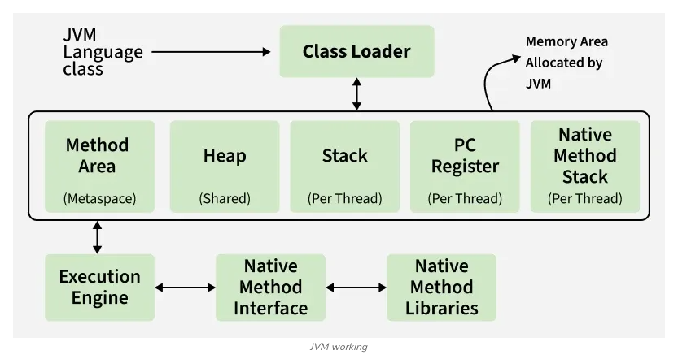
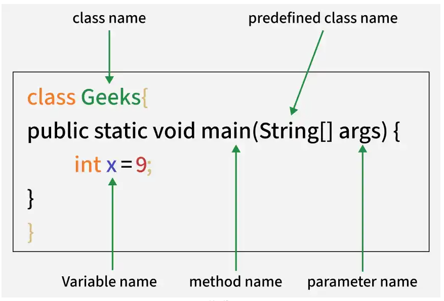

Basics
🔑 Java
Resource link - GeeksforGeeksJava is a widely used programming language for building web, desktop, mobile, and enterprise applications. It is known for its simple syntax, portability, and powerful features that make development easier and more secure.
Key Features of Java
- OOP Concepts → Classes, Objects, Inheritance, Polymorphism
- Platform Independent → JVM enables "write once, run anywhere"
- Secure & Robust → Strong memory management, exception handling
📊 Overview Architecture
🛠️ Features of Java
- OOP → Modular, reusable code (classes, objects, inheritance, polymorphism)
- Platform Independent → JVM enables cross-OS execution
- Secure & Robust → Memory management + exception handling
- Multithreading → Concurrent task execution for efficiency
- Rich API → Built-in libraries for diverse needs
- Frameworks → Spring, Hibernate, etc. for enterprise/web apps
- Open-Source Libraries → Extend functionality, speed up dev
- Maintainability → Structured design supports scaling
📊 Features Architecture
☕ JDK / JRE / JVM Architecture
🔑 Keywords (minimal explanations)
- JDK → Full kit (JRE + tools)
- JRE → Runtime (JVM + libraries)
- JVM → Executes bytecode
- Class Loader → Loads classes
- Runtime Data Areas → Memory (heap, stack)
- Execution Engine → Interprets/compiles bytecode
- Development Tools → Compiler, debugger, utilities
- Core Libraries → Collections, IO, Networking

🧮 Simple Java Program (Calculator)
Write code in a file like Calculator.java.
import java.util.Scanner;
public class Calculator {
public static void main(String[] args) {
Scanner scanner = new Scanner(System.in);
System.out.println("--- Simple Java Calculator ---");
System.out.print("Enter first number: ");
double num1 = scanner.nextDouble();
System.out.print("Enter an operator (+, -, *, /): ");
char operator = scanner.next().charAt(0);
System.out.print("Enter second number: ");
double num2 = scanner.nextDouble();
double result = 0;
switch(operator) {
case '+': result = num1 + num2; break;
case '-': result = num1 - num2; break;
case '*': result = num1 * num2; break;
case '/': result = num1 / num2; break;
default: System.out.println("Invalid operator"); return;
}
System.out.println("Result: " + num1 + " " + operator + " " + num2 + " = " + result);
}
}How it runs
- Java Compiler
javaccompiles it into bytecode (e.g.,Calculator.class). - JVM (Java Virtual Machine) reads the
.classfile and interprets the bytecode. - The JVM initially interprets bytecode and uses JIT (Just-In-Time) compilation to convert frequently executed code into native machine code for better performance.
Terminal Output:
$ javac Calculator.java
$ java Calculator
--- Simple Java Calculator ---
Enter first number: 15.5
Enter an operator (+, -, *, /): *
Enter second number: 4.0
Result: 15.5 * 4.0 = 62.0🌟 Famous Applications Built Using Java
- Android Apps: Most of the Android mobile apps are built using Java.
- Netflix: Uses Java for content delivery and backend services.
- Amazon: Java language is used for its backend systems.
- LinkedIn: Uses Java for handling high traffic and scalability.
- Minecraft: One of the world’s most popular games that is built in Java.
- Spotify: Uses Java in parts of its server-side infrastructure.
- Uber: Java is used for backend services like trip management.
- NASA WorldWind: This is a virtual globe software built using Java.
💼 Uses of Java
- Mobile App Development: Android development using Android Studio.
- Web Development: Using frameworks like Spring, Spring Boot, Struts, Hibernate.
- Desktop GUI Applications: With libraries like JavaFX and Swing.
- Enterprise Applications: Backbone of banking, ERP and large-scale business software.
- Game Development: With engines like LibGDX and jMonkeyEngine.
- Big Data Technologies: Like Hadoop and Apache Kafka.
- Internet of Things (IoT): Java can run on embedded systems and devices.
- Cloud-based Applications: Java is used in services on AWS, Azure and Google Cloud.
- Scientific Applications: Java is used in tools that process large amounts of scientific data.
print Hello, World! using java
System.out.println("Hello, World!");
Output- Hello, World!
Steps of Using Scanner in Our Code
- Import the Scanner class using
import java.util.Scanner; - Create a Scanner object →
Scanner sc = new Scanner(System.in); - Print a prompt message, then use Scanner methods:
nextInt()→ whole numbersnextLine()→ full text linesnextDouble()→ decimal numbersnext()→ single words
- Close the Scanner using
sc.close();
import java.util.Scanner;
public class Geeks {
public static void main(String[] args) {
Scanner scn = new Scanner(System.in);
// Reading a single line string
System.out.print("Enter a sentence: ");
String sentence = scn.nextLine();
System.out.println("Entered Sentence: " + sentence);
// Reading an integer
System.out.print("Enter an integer: ");
int x = Integer.parseInt(scn.nextLine());
System.out.println("Entered Integer: " + x);
// Reading a float value
System.out.print("Enter a float value: ");
float f = Float.parseFloat(scn.nextLine());
System.out.println("Entered Float Value: " + f);
scn.close();
}
}
Output:
Enter a sentence: Java is easy
Entered Sentence: Java is easy
Enter an integer: 10
Entered Integer: 10
Enter a float value: 3.5
Entered Float Value: 3.5
Note: Using nextLine() consistently helps avoid
newline issues.
Common Methods of Scanner Class
| Method | Description |
|---|---|
| nextBoolean() | Reads Boolean value |
| nextByte() | Reads Byte value |
| nextDouble() | Reads Double value |
| nextFloat() | Reads Float value |
| nextInt() | Reads Int value |
| nextLine() | Reads Line value |
| nextLong() | Reads Long value |
| nextShort() | Reads Short value |
| next() | Reads single word |
BufferedReader vs Scanner Class
| Aspects | BufferedReader | Scanner |
|---|---|---|
| Primary Use | Efficient reading of character streams | Reading formatted input |
| Speed | Faster for large input | Slower due to parsing |
| Exception Handling | Throws checked exceptions | No checked exceptions |
| Flexibility | Efficient for large input | Best for simple data types |
| Thread Safety | Synchronized | Not thread-safe |
| Common Use | Large input streams | Smaller, formatted input |



Types of Data Types in Java
Data types in Java define the kind of data a variable can hold and the memory required to store it. They are broadly divided into two categories:
- Primitive Data Types: Store simple values directly in memory.
- Non-Primitive (Reference) Data Types: Store memory references to objects.

1. Primitive Data Types
| Type | Description | Default | Size | Example | Range |
|---|---|---|---|---|---|
| boolean | Logical values | false | JVM-defined | true, false | true/false |
| byte | 8-bit signed integer | 0 | 1 byte | 10 | -128 to 127 |
| char | 16-bit Unicode character | \u0000 | 2 bytes | 'A' | 0 to 65,535 |
| short | 16-bit signed integer | 0 | 2 bytes | 2000 | -32,768 to 32,767 |
| int | 32-bit signed integer | 0 | 4 bytes | 1000 | -2,147,483,648 to 2,147,483,647 |
| long | 64-bit signed integer | 0L | 8 bytes | 123456789L | ±9.22e18 |
| float | 32-bit floating point | 0.0f | 4 bytes | 3.14f | ~6–7 digits precision |
| double | 64-bit floating point | 0.0d | 8 bytes | 3.14159d | ~15–16 digits precision |
2. Non-Primitive (Reference) Data Types
Non-primitive data types store references (memory addresses) rather than actual values. They include String, Class, Object, Interface, and Array.
// String
String name = "Himesh";
System.out.println(name);
// Class
class Student {
String name;
int age;
}
Student s1 = new Student();
s1.name = "Himesh";
s1.age = 22;
// Object
Object obj = new String("Hello");
System.out.println(obj.toString());
// Interface
interface Animal {
void sound();
}
class Dog implements Animal {
public void sound() {
System.out.println("Bark");
}
}
Animal a = new Dog();
a.sound();
// Array
int[] numbers = {1, 2, 3, 4};
System.out.println(numbers[2]); // Output: 3
Quick Comparison
| Aspect | Primitive | Non-Primitive |
|---|---|---|
| Stored Value | Actual value | Reference (address) |
| Size | Fixed | Variable |
| Examples | int, char, boolean | String, Array, Class |
| Default Values | Predefined (0, false) | null |
| Flexibility | Limited | Highly flexible |
Wrapper Classes in Java
Last Updated : 6 Apr, 2026
In Java, wrapper classes allow primitive data types to be represented as objects. This enables primitives to be used in object-oriented features such as collections, generics, and APIs that require objects.
- Each wrapper class encapsulates a corresponding primitive value inside an object (e.g., Integer for int, Double for double).
- Java provides wrapper classes for all eight primitive data types to support object-based operations.
Example: Converting Primitive to Wrapper (Autoboxing)
class Geeks {
public static void main(String[] args) {
int b = 357;
// Autoboxing: primitive int -> Integer object
Integer a = b;
System.out.println("The primitive int b is: " + b);
System.out.println("The Integer object a is: " + a);
}
}Output:
The primitive int b is: 357 The Integer object a is: 357
Explanation: Here, the primitive int value is automatically converted into an Integer object by Java. This automatic conversion is called autoboxing.
Why Wrapper Classes Are Needed
Wrapper classes are required in Java for the following reasons:
- Java collections (ArrayList, HashMap, etc.) store only objects, not primitives.
- Wrapper objects allow primitives to be used in object-oriented features like methods, synchronization, and serialization.
- Objects support null values, while primitives do not.
- Wrapper classes provide utility methods such as compareTo(), equals(), and toString().
Autoboxing and Unboxing
1. Autoboxing
The automatic conversion of primitive types to the object of their corresponding wrapper classes is known as autoboxing. For example: conversion of int to Integer, long to Long, double to Double, etc.
Java program to demonstrate the automatic conversion of primitive to wrapper class (Autoboxing):
import java.util.ArrayList;
class Geeks {
public static void main(String[] args) {
char ch = 'a';
// Autoboxing: char -> Character
Character c = ch;
ArrayList<Integer> list = new ArrayList<>();
// Autoboxing: int -> Integer
list.add(25);
System.out.println(list.get(0));
}
}Output:
25
2. Unboxing
Unboxing is the automatic conversion of a wrapper class object back into its corresponding primitive type.
import java.util.ArrayList;
class Geeks {
public static void main(String[] args) {
Character ch = 'a';
// Unboxing: Character -> char
char c = ch;
ArrayList<Integer> list = new ArrayList<>();
list.add(24);
// Unboxing: Integer -> int
int num = list.get(0);
System.out.println(num);
}
}Output:
24
Java Wrapper Classes Example
class Geeks {
public static void main(String[] args) {
byte b = 1;
Byte byteObj = Byte.valueOf(b);
int i = 10;
Integer intObj = Integer.valueOf(i);
float f = 18.6f;
Float floatObj = Float.valueOf(f);
double d = 250.5;
Double doubleObj = Double.valueOf(d);
char c = 'a';
Character charObj = c; // autoboxing
System.out.println("Wrapper Objects:");
System.out.println(byteObj);
System.out.println(intObj);
System.out.println(floatObj);
System.out.println(doubleObj);
System.out.println(charObj);
// Unboxing
byte bv = byteObj;
int iv = intObj;
float fv = floatObj;
double dv = doubleObj;
char cv = charObj;
System.out.println("\\nUnwrapped values:");
System.out.println(bv);
System.out.println(iv);
System.out.println(fv);
System.out.println(dv);
System.out.println(cv);
}
}Primitive Data Types & Wrapper Classes
| Primitive Data Type | Wrapper Class |
|---|---|
| byte | Byte |
| short | Short |
| int | Integer |
| long | Long |
| float | Float |
| double | Double |
| char | Character |
| boolean | Boolean |
Common Methods of Wrapper Classes
| Method | Description | Example |
|---|---|---|
parseXxx(String s) |
Converts a String into its corresponding primitive type | int a = Integer.parseInt("100"); |
valueOf(String s) |
Converts a String into a wrapper object | Integer a = Integer.valueOf("100"); |
valueOf(primitive) |
Converts a primitive value into a wrapper object | Integer a = Integer.valueOf(10); |
xxxValue() |
Converts a wrapper object into its primitive type | int a = obj.intValue(); |
toString() |
Converts wrapper object into a String | String s = Integer.toString(10); |
compareTo(Xxx obj) |
Compares two wrapper objects | a.compareTo(b); |
equals(Object obj) |
Compares values, not references | a.equals(b); |
hashCode() |
Returns hash code of the object | obj.hashCode(); |
min(x, y) |
Returns minimum of two values | Integer.min(10, 20); |
max(x, y) |
Returns maximum of two values | Integer.max(10, 20); |
sum(x, y) |
Returns sum of two values | Integer.sum(10, 20); |
compare(x, y) |
Compares two primitive values | Integer.compare(10, 20); |
isNaN() |
Checks if value is Not a Number (Float/Double only) | Double.isNaN(val); |
isInfinite() |
Checks infinite value (Float/Double only) | Double.isInfinite(val); |
decode(String s) |
Decodes decimal, hex, or octal string | Integer.decode("0xA"); |
parseBoolean(String s) |
Converts string to boolean | Boolean.parseBoolean("true"); |
Projects
Project: Calculator
import java.util.Scanner;
public class Calculator {
public static void main(String[] args) {
try (Scanner sc = new Scanner(System.in)) {
System.out.println("--- Simple Java Calculator ---");
System.out.print("Enter first number: ");
double num1 = sc.nextDouble();
System.out.print("Enter an operator (+, -, *, /): ");
char operator = sc.next().charAt(0);
System.out.print("Enter second number: ");
double num2 = sc.nextDouble();
double result;
switch (operator) {
case '+' ->
result = num1 + num2;
case '-' ->
result = num1 - num2;
case '*' ->
result = num1 * num2;
case '/' ->
result = num1 / num2;
default -> {
System.out.println("Invalid operator");
return;
}
}
System.out.println("Result: " + num1 + " " + operator + " " + num2 + " = " + result);
sc.close();
}
}
}
Project: Number Guessing Game
import java.util.Scanner;
// The program generates a random number between a predefined range (e.g., 1 to 100).
// The user has limited attempts (K tries) to guess the number.
// At each guess, the program provides a hint: If the guessed number is higher, it tells the user to guess lower. If the guessed number is lower, it tells the user to guess higher.
// If the user guesses correctly, they win.
// If all attempts are exhausted, the game reveals the correct number.
public class NumberGussingGame {
public static void main(String[] args) {
System.out.println("welcome to the Number Guessing Game\n between 1 and 100 ");
try (Scanner sc = new Scanner(System.in)) {
int SystemSelectedNumber = (int) (Math.random() * 100 + 1);
// System.out.println(SystemSelectedNumber);
int attempts = 5;
while (attempts > 0) {
System.out.print("You have " + attempts + " attempts left.\n Guess the number: ");
int typedNumber = sc.nextInt();
if (typedNumber < 1 || typedNumber > 100) {
System.out.println("Invalid number! Please enter between 1 and 100.");
// ⚠️ Do NOT decrement attempts here
continue;
}
if (typedNumber == SystemSelectedNumber) {
System.out.println("You Win!");
sc.close();
return;
} else if (typedNumber > SystemSelectedNumber) {
System.out.println("You guessed higher");
} else {
System.out.println("You guessed lower");
}
attempts--;
}
System.out.println("The correct number was: " + SystemSelectedNumber);
}
// System.out.println(SystemSelectedNumber);
}
}